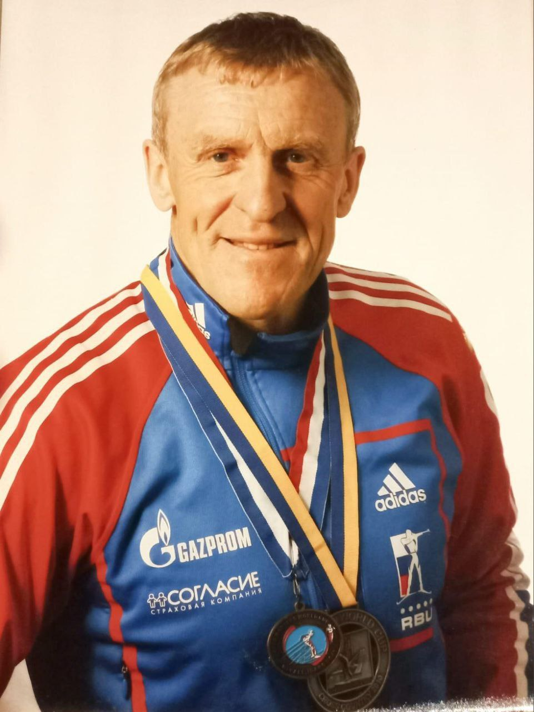

Тренер

Вайнер-Кротов Андрей Владимирович
10.07.1956
Должности:
- Тренер сборной команды ИрНИТУ по лыжным гонкам
- Тренер 1 категории
- Судья 1 категории по лыжным гонкам
КМС по лыжным гонкам, участник 8 чемпионатов мира WMC. 2008 году стал чемпионом мира в США, 2010 год серебренный призёр в Швеции. Многократный призёр региональных и областных соревнований. Награждён дипломом Федерации лыжных гонок Иркутской области, как лучший тренер сезона 2008-2009 года. В 2010 году внесён в книгу «Спортивная слава Иркутска».
Повышение квалификации при СИБГУФК "Современные технологии подготовки спортивного резерва в лыжных гонках".